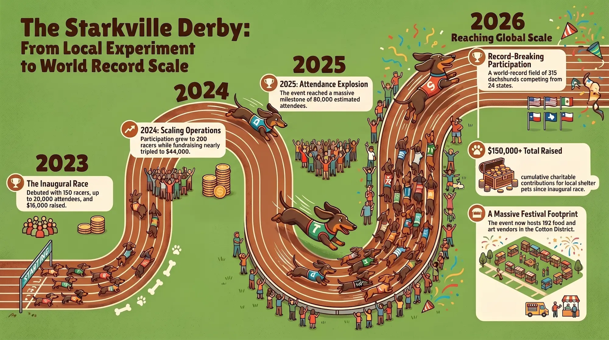
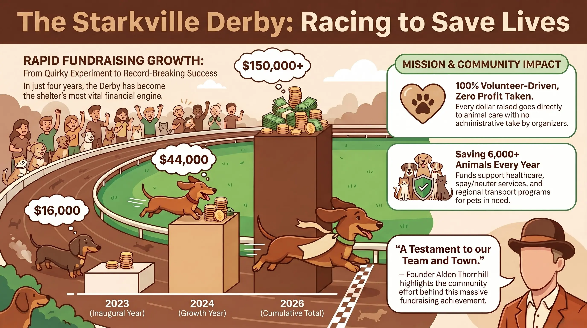

Picture this: University Drive in Starkville's Cotton District is shut down. An a cappella group has just finished the Star-Spangled Banner. A military bugler sounds the Call to Post. Planes fly overhead. And then — a gate swings open and 315 dachshunds explode down a 100-foot stretch of green turf, short legs a blur, while tens of thousands of fans erupt on both sides of the track. This is the Starkville Derby, and there is genuinely nothing else quite like it in America.
Now in its fourth year, the Starkville Derby has grown from a quirky local experiment — born in 2023 when founder Alden Thornhill thought it would be "kind of funny to shut down University Drive and race a bunch of wiener dogs" — into a nationally recognized event that has been named the Mississippi Tourism Association's Best Large Festival, the Mississippi Main Street Association's Best Creative Large Event, and one of the Southeast Tourism Society's Top 20 Signature Events. It has generated millions of social media impressions, drawn watch parties at 60 bars and restaurants across the country, and raised more than $150,000 for the Oktibbeha County Humane Society since its founding — all driven entirely by volunteers, with zero profit taken by the organizing team.
This guide covers everything you need — what the event is, how it works, what else is happening that day, how to get there, where to park, how to watch if you can't attend, and — if you have a dachshund of your own — how to get your dog into the 2027 race.
What Is the Starkville Derby? Origin Story and Growth
The Starkville Derby did not emerge from a tourism board strategy session or a city planning committee. It came from a conversation at Two Brothers, a restaurant in the Cotton District, where Alden Thornhill — a dachshund owner and board member at the local humane society — identified a problem: Starkville had lost its spring festival, and the hospitality businesses, artists, and vendors who depended on that kind of event were hurting. His solution was characteristically direct. "One, we could help out the restaurants and bars, and we could have artisan and vendors and help them out. Best of all, though, is we could tie it to a charity. The Humane Society fit in perfectly," Thornhill told the Starkville Daily News.
The first Derby in May 2023 drew approximately 150 dachshunds, raised $16,000 for the Oktibbeha County Humane Society — instantly becoming the shelter's largest annual fundraiser — and pulled an estimated 5,000 to 20,000 attendees to University Drive. By the second year, the racer count grew to 200, the fundraising total doubled to $44,000, and 250 additional dogs were left on a waitlist after capacity closed. The third Derby, in May 2025, attracted an estimated 80,000 attendees — a figure that puts it in a different category than most Mississippi events of any kind. The 2026 edition, scheduled for April 25, enters with 315 registered racers from 24 states and a waitlist that confirms there is no shortage of demand.

Four years of growth: from 150 dogs and $16,000 raised to 315 racers and $150,000+ for shelter pets.
Is It Really the World's Largest? A Direct Answer
The Starkville Derby's official title is the "World's Largest Charity Wiener Dog Race" — and that precision matters. It is a claim that holds up to scrutiny when examined against the actual competitive landscape.
Other well-established dachshund racing events in the United States — the Wienerschnitzel Wiener Nationals in California, which has been held since 1996 and set a record with 124 dogs in 2023; Oktoberfest Zinzinnati's Running of the Wieners; and dozens of regional events across the country — none come close to 315 competing dachshunds. The Starkville Derby is, by a significant margin, the largest organized dachshund racing competition in the world.
One distinction is worth making clearly: Guinness World Records does hold a separate record for the "Largest Dachshund Dog Walk" — 897 dogs in a parade through Regensburg, Germany, in September 2024, at the annual Dackelparade organized by the Dackelmuseum. That is a dog walk, not a competitive race, and it is held under a different record category entirely. The Starkville Derby's claim to "largest charity wiener dog race" is a specific, accurate, and uncontested title — not marketing language.
| Event | Location | Format | Racers / Dogs |
|---|---|---|---|
| Starkville Derby 2026 | Starkville, MS | Competitive charity race | 315 (record) |
| Wienerschnitzel Wiener Nationals | Cypress, CA | Competitive race | 124 (2023 record) |
| Oktoberfest Zinzinnati Running of the Wieners | Cincinnati, OH | Competitive race | ~100 |
| Dackelparade / Dackelmuseum | Regensburg, Germany | Dog walk (not a race) | 897 (Guinness record for walks) |
The Races: How It Works, Divisions, and Past Champions
The racing format is bracket-style elimination across four main divisions, each contested in heats on a 100-foot turf track rolled out along University Drive. Each heat places multiple dogs at the starting line, and they sprint — or, in memorable cases, wander, sit down, or reverse course — toward their owners at the finish line, who wait with whatever treats or toys their dogs find most motivating. The results are genuinely unpredictable and consistently entertaining.
The four divisions are Puppy (youngest dachshunds), Adult, Senior, and a special "Pretenders" division for non-dachshund participants — other dog breeds who dress in hot dog costumes and race their own separate heats. No dog is turned away for not being a wiener dog. The Pretenders race has become its own beloved part of the day.
Each division crowns a division champion, with the overall Grand Champion determined among the divisional winners. Past Grand Champions have traveled from outside Mississippi every year since the Derby began — Dak from Georgia won the inaugural 2023 Derby, Maggie Mae from Woodstock, Georgia, claimed the 2024 title, and Forest from Texas took the 2025 championship. The fact that a small-town Mississippi event has attracted national-caliber competition speaks to how quickly the Derby has built its reputation.
The race broadcast is produced with genuine sports production values — an ESPN-style multi-camera setup with cameras at the start line, finish line, and midtrack, a trackside reporter conducting post-race interviews with owners, and a full video board visible to the crowd. The entire event streams live on the Derby's YouTube channel and Facebook page beginning at 11:00 a.m. CT on race day.
The Charity Mission: Oktibbeha County Humane Society
The Starkville Derby is not just a spectacle — it is a fundraising operation, and one that has delivered real results for a shelter that serves a 17-county region in north Mississippi. The Oktibbeha County Humane Society (OCHS) receives all net proceeds from the Derby. In the first year, the Derby raised $16,000 — more than any previous OCHS fundraiser had generated. The second year that figure jumped to $44,000. Cumulatively through 2026, the event has raised more than $150,000 for the shelter. Every dollar of that was raised with minimal operating expense — one year, the social media budget was just $120, with the rest of the event's reach driven entirely by organic community interest.
"The funds raised from this event will help us provide critical services and care for the more than 6,000 animals that come through our doors each year," said Michele Anderson, Executive Director of OCHS. The shelter — which has earned a 92% rating from Charity Navigator and a four-star designation — uses the funds for animal healthcare, spay and neuter services, food, housing, and microchipping costs for animals in its care. OCHS also operates a regional transport program, moving adoptable pets from overcrowded Mississippi shelters to partner shelters with better adoption rates. The ASPCA has committed $900,000 in grant funding to OCHS for the construction of an Animal Support Center in Starkville — a partnership that began long before the Derby existed, but that the Derby has helped accelerate by raising the shelter's profile dramatically.
As Thornhill has emphasized repeatedly: "All the funds go to the humane society. We don't make a cent off of this. We're 100% volunteer driven."

$150,000+ raised for shelter pets — with a $120 social media budget in year one.
Beyond the Race: Boardtown Pizza and Pints Arts Festival
The races are the centerpiece, but the surrounding festival is large enough to occupy a full day independently. The Boardtown Pizza and Pints Arts Festival, which runs concurrently with the Derby along University Drive and the Cotton District, features 192 approved food and art vendors for the 2026 edition — making it one of the largest arts festivals in the Southeast by vendor count.
The vendor mix ranges from local Starkville restaurants and food trucks to artisan jewelry makers, candle companies, dog-specific vendors, custom clothing, woodworks, face painters, and wiener dog-themed merchandise of every imaginable variety. The scale of the vendor lineup means that attendees without any particular interest in the races can spend a full morning simply walking the festival footprint and find more than enough to engage with.
Festival traditions that have become Derby staples include the Old Dominick Call to Post — a ceremonial toast sponsored by Old Dominick Distillery that kicks off racing traditions each year — Mutt Juleps (a Derby-themed cocktail riff on the Kentucky Derby's mint julep), military flyovers at the opening of the event, live music from multiple acts including the Sam Grisman Project performing at 10:00 a.m., a large children's activity zone with face painters and balloon artists, and the year's most anticipated vehicle: the Oscar Mayer Wienermobile.
The Wienermobile's annual appearance at the Derby has become a tradition of its own. The 27-foot-long hot dog-shaped vehicle draws its own crowds of first-timers and returning attendees, and balloon artists fashioning dachshund shapes out of balloons in its vicinity have become one of the Derby's more distinctive visual details.
Starkville, Mississippi: The City Behind the Race
For visitors making the trip to the Derby from outside the region, Starkville is worth understanding as a destination in its own right. The city — county seat of Oktibbeha County with a 2026 population of approximately 25,900 — is fundamentally a college town built around Mississippi State University, the state's largest university with more than 22,000 students, 800 faculty members, and an alumni network exceeding 143,000. That university presence gives Starkville an energy, diversity, and cultural density that is unusual for a city of its size.
The Derby's venue, University Drive in the Cotton District, is itself one of the more architecturally significant neighborhoods in Mississippi. The Cotton District was developed beginning in 1969 by Dan Camp, who transformed a deteriorated urban area between downtown Starkville and the MSU campus into what is now recognized as North America's first New Urbanist community — a compact, walkable neighborhood of Greek Revival and Classical architecture mixed with Victorian elements, lining brick-paved alleys. It is home to dozens of restaurants, bars, and unique residential units, and it functions as the social heart of Starkville's bar and dining scene. On Derby day, when the street is shut down and 192 vendors fill its footprint, the neighborhood shows why it was chosen for this event.
Starkville's broader character has been recognized nationally. Niche rates it as one of the best places to live in Mississippi. The city's public school district places in the top 20% of Mississippi districts. And the presence of MSU means that the arts, music, and cultural programming available in Starkville — the Starkville-MSU Symphony Orchestra, the Starkville Community Theater, and more — punch well above what a city of 25,000 would typically offer. For visitors staying overnight around the Derby, the Cotton District and downtown Starkville offer enough dining, live music, and character to make the trip worth extending.
Practical Information: How to Attend the 2026 Derby
Starkville Derby 2026: Fast Facts
- Date: Saturday, April 25, 2026
- Grounds Open: 9:00 a.m. CT
- Live Music (Sam Grisman Project): 10:00 a.m. CT
- Racing Traditions Begin: ~11:00 a.m. CT (Old Dominick Call to Post Toast)
- Live Stream Begins: 11:00 a.m. CT on YouTube and Facebook
- Location: 600 University Drive, Cotton District, Starkville, MS 39759
- Admission: Free for spectators
- Racers: 315 dachshunds from 24 states (registration closed for 2026)
- Vendors: 192 food and art vendors (Boardtown Pizza and Pints Arts Festival)
- Charity Beneficiary: Oktibbeha County Humane Society
- Official Website: thestarkvillederby.com
- Merchandise: Available on-site and at b-unlimited.com
Getting There
The Derby is held at 600 University Drive in the Cotton District, Starkville, MS 39759. Starkville sits approximately 125 miles northeast of Jackson, 85 miles west of Birmingham, Alabama, and 125 miles southeast of Memphis. The nearest commercial airport is Golden Triangle Regional Airport (GTR) in Columbus, Mississippi, approximately 25 miles east. Memphis International (MEM) and Birmingham-Shuttlesworth (BHM) are the nearest major commercial airports for those flying in from farther away.
Parking
University Drive is closed to vehicle traffic on Derby day, which means parking requires planning. Mississippi State University campus lots — including the Mill at MSU and the Barnes & Noble on campus — offer nearby parking with walkable access to the Cotton District. The City of Starkville uses the ParkMobile app for contactless paid parking in the Cotton District area. Standard weekend rates run $1.25 per hour, with a flat rate of $10.00 per day for stays over three hours. Download ParkMobile in advance and set up your account before arriving. Arriving early is strongly advised — the Derby draws tens of thousands of attendees and the Cotton District area fills quickly.
Can You Bring Your Dog as a Spectator?
Yes — and many people do. Non-racing dogs are welcome as spectators throughout the festival grounds. Dogs must remain on leash at all times. Water stations and shaded areas are available for four-legged guests. The event's atmosphere is dog-friendly by design; expect to see a remarkable variety of breeds, sizes, and costumes throughout the day. Note that the Cotton District area can become very crowded by midday, which can be stressful for some dogs — plan accordingly based on your pet's temperament.
Watching the Derby Remotely
For those unable to attend in person, the full event is broadcast live beginning at 11:00 a.m. CT on the Starkville Derby YouTube channel and Facebook page. The multi-camera broadcast includes trackside reporter interviews, color commentary, and full coverage of each heat. In 2026, an estimated 60 bars and restaurants across the country are hosting watch parties — a figure that reflects how far the Derby's audience has extended beyond Mississippi.
How to Register Your Dog for the 2027 Derby
Race registration for the 2026 Derby is closed — all 315 spots filled well in advance, and the waitlist for this year was substantial. For dachshund owners who want to compete in 2027, here is what the history of the event tells us about how to succeed.
Practical Guide: Getting Your Dog Into the 2027 Starkville Derby
- Follow the official channels now: Registration announcements come first on the Derby's Facebook page and Instagram (@starkvillederby). Following both is the best way to be notified the moment registration opens. The official website is also updated when registration goes live.
- Expect registration to open in fall or early winter: Based on the pattern of prior years, registration for each spring Derby has opened in November or December — roughly four to five months before the event. In 2026, racers were confirmed and the Racers page was live by January. Act immediately when registration opens — capacity fills in record time.
- Breed eligibility: The primary racing divisions are for dachshunds and dachshund mixes. Dogs that are predominantly dachshund in appearance and build are accepted for the main divisions. Non-dachshund dogs of all breeds are welcome to compete in the Pretenders division, where hot dog costumes are worn. The Derby is organized as a fun charity event, not an AKC field trial, and the eligibility process reflects that spirit.
- Capacity is firm: In 2024, 200 racing spots filled and 250 additional owners were left on the waitlist. In 2026, 315 spots filled months before the event. There is no mechanism to reserve a spot informally — register the moment it opens or risk missing another year.
- Contact the Derby directly for specific questions: The organizing team is responsive. Reach them through the contact page on the official website for questions about eligibility, the registration process, or accommodations for dogs with special needs.
A Note on Dog Health and the Race
The Dachshund Club of America has noted that dachshunds have a genetic predisposition to back injuries due to their breed structure. The Starkville Derby races are short-distance sprints on turf — not the type of sustained, high-impact activity associated with back problems in the breed — but owners of senior dachshunds or dogs with known spinal issues should consult their veterinarian before registering. The Derby's organizing team does not force any dog to race, and dogs that show signs of distress or injury are withdrawn from competition. The event's spirit is participation and fun, not athletic pressure.
The Starkville Derby's Influence: A Model Being Copied
One of the clearest measures of the Derby's impact is the extent to which other communities are trying to replicate it. "People are constantly messaging us asking how to set up their own derby," Thornhill said at the 2026 Mississippi Tourism Association Spring Summit. "There's been multiple towns that have reached out to us." In Adams County, the Monticello Derby has already been established, with its champion earning a qualifying spot at the Starkville race — a model that suggests the Derby is not just growing but beginning to develop a regional competitive ecosystem around it.
The event has also made Starkville a case study for tourism organizations across the state. The Mississippi Tourism Association has highlighted the Derby as an example of how a grassroots, community-driven event can outperform heavily funded tourism investments. When the Mississippi Tourism Association held its 2026 Spring Summit in Starkville — the first time the city had hosted since 2018 — organizers staged a mini wiener dog race as the morning's opening activity. The Derby has become, in some sense, the city's most exportable identity.
Paige Hunt, Director of Tourism with the Greater Starkville Development Partnership, summarized it at that summit: "I think one of the things I love about moving our conferences around is I'm often inspired by what is happening in other destinations." In 2026, what is happening in Starkville on April 25 is worth the trip to see firsthand.
Sources
The Starkville Derby — Official Website·SuperTalk Mississippi, Feb. 2026·The Dispatch, Apr. 2025·WCBI, May 2025·Magnolia Tribune, Apr. 2024·The Reflector, Apr. 2025·WTVA, May 2024·Starkville Daily News, Apr. 2026·Guinness World Records — Largest Dachshund Dog Walk·Oktibbeha County Humane Society·Starkville.org — Derby listing·Wikipedia — Dachshund racing
Event details reflect publicly available information as of April 20, 2026. Mississippi Lead does not accept payment for coverage of events, organizations, or businesses referenced in this article.